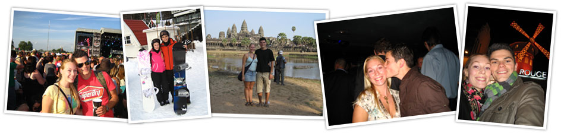

Svenska
Rockelstad är ett nationalromantiskt renässansslott, beläget i centrala Södermanland. Med sina fyra sjuttonhundratalsflyglar och vackert anlagda park vid sjön Båvens strand är godset en unik privat levande herrgård som haft spännande ägare under seklernas gång från 1300-talet fram till våra dagar.
Slottet och flyglarna har en museal interiör och bevarade inventarier från tidigare generationer. Slottet är ombyggt och tillbyggt många gånger från 1600 talet fram till idag. Framsidan av slottet har Gripsholm som förebild, sjösidan är mer inspirerad av italiensk renässans med bla. valvbågar.
English
Rockelstad Castle is a renaissance style fortress with inspiration from the Swedish national romanticism era. Situated in central Södermanland, it rests peacefully upon the shores of Lake Båven. Complemented by four wings all built between 1694 - 1709, it is a unique private country estate with an amazing historical background and a great cultural value
The castle has been rebuilt many times from the 1700th century and to present day. The front side of the castle has Gripsholm castle as its role model. Style of the norse national romanticism is prevailing. The seaside is more inspired by Italian renaissance with moorish vaults among other elements.
